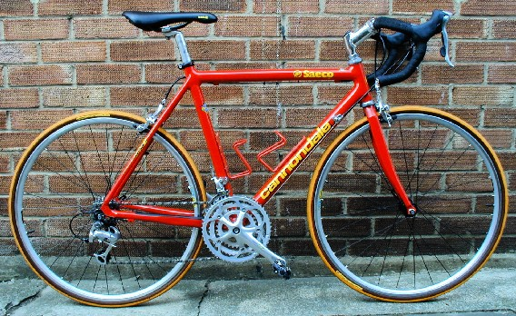
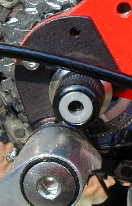
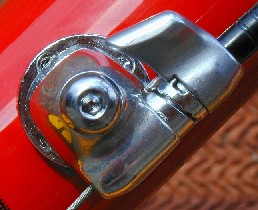

 This is a modified version of a test of women's road bikes I wrote for Cycling Plus in August '99. All the bikes I tested (Cannondale R600 Compact Triple, Vision Pocket Rocket, Battaglin Bambino) were based on 650c (ISO 571mm) wheels. Since this was meant to be a test of bikes for women, and because not all the bikes fit me, I invited as many roadie women as I could find to ride the bikes and give me their opinions.
The Cannondale R600 Compact Triple has 650c wheels, fat bright red aluminium tubes and a Shimano 105 groupset, with a triple chainset. The wheels are semi-deep section Mavic CXP 21 rims on CODA (Cannondale's own brand) hubs.
The Cannondale stands out in a crowd, its aluminium fork and fat tubes painted in Saeco/Cannondale red and yellow. The 49cm frame size fits me perfectly. It worked well for all of the riders of roughly my height, suggesting that Cannondale have got the geometry right with this one. The two water bottle braze-ons allow the use of two large water bottles, a real plus. There are tapped holes in the rear dropouts, but they are of little use as there is insufficient clearance for attaching mudguards. I had about 1cm of toe overlap with the supplied 165mm chainset. This wasn't a problem on the rides I did with it, but there is a chance it could catch me out if I'm not careful. The derailleur hanger is replaceable in the event of crash damage (shown to the right). The frame and fork together weigh in at a reasonable 4.3 lbs, the same as the Vision.
It's difficult to know where to put a pump. If you put it under the top tube you can only use a small water bottle in the bottle cage on the seat tube, and of course if you put the pump along the seat tube you lose the second bottle entirely. A pump peg along the seatstay would have been great, but this seems to be a luxury only available on custom bikes. So you have a choice of riding with less water, or using a wimpy mini-pump.
The frame is very stiff. The bottom bracket is rock solid when you stand up to accelerate. This is a fine sprinter's bike. Since it's in the Saeco/Cannondale team colors, you can add some entertainment to your workouts by pretending you're Mario sprinting to a stage victory in the Tour de France.
I like a bike that goes where I want with little effort. I felt instantly at home on the Cannondale. It holds a straight line remarkably well, but will corners easily, neither diving into it nor showing and relectance to turn. In other words, it did exactly what I wanted to, without any thought required. The handling inspired confidence. The Vision tested at the same time required a bit more effort to control, but I adjusted to it.
Of course, not everyone likes the same thing, and some riders liked the quicker, less stable handling of the Vision and Battaglin. They felt that they would be happy riding the more frisky bikes in short road races or training rides, while they would prefer the Cannondale or Trek for longer rides, especially centuries.
The parts of the Cannondale wheels are well chosen. They have semi-aero Mavic CXP 21 rims in sensible silver, CODA 700 hubs, and black 1.8mm spokes, 28 in front and 32 in back. The thinner spokes are suitable for a race bike, but they would be even better if they were double butted. Cannondale have stuck with a reliable three-cross spoking pattern rather than going for something trendy (but more likely to damage hub flanges) like radial spoking.
Spoke tension isn't particularly high in the Cannondale wheels, nor it is even. Some time spent with a spoke wrench would reward you with more reliable wheels: the back wheel on the Cannondale has already gone out of true by a few millimeters.
All the official test bikes came with 20mm tires. As an experiment I put 23mm Continental Grand Prix 3000 tires (shown in the photo) on the Cannondale. The resulting improvement in the ride was obvious and welcome. The wider tires also come with a bonus of less rolling resistance, so you don't have to sacrifice efficiency for comfort.
The combination of the Cannondale's wheels with the Grand Prix tires gave a slightly smoother ride than the Vision's aero wheels with Fortezzas, probably due to the rigidity of the aero rims and the suppleness of the Grand Prix tires.
The Cannondale has a complete Shimano 105 groupset, with a triple chainset. The shifting and braking work perfectly, although it is somewhat annoying that the front shifter only has three positions (one for each of the chainrings) so you can't trim the derailleur. There is a very nice cable adjuster on the down tube for the rear shifter cable (shown in the picture). The 165mm cranks suited the size of the bike perfectly. However the same cranks are used on entire line of Compact Cannondales, and 165mm is far too long for the smaller models. I found the range of gears ideal for club riding. Although I didn't use the granny gear around Cambridge, it would be indispensable elsewhere.
The Cannondale has a threaded headset with a sensible-length 90mm CODA (Cannondale) stem. The front-loading stem looks more bulky than the traditional slide-though stem, but makes it quick and easy to swap stems to try out different positions. The handlebars on the Cannondale (42cm) were wider than the handlebars on the other bikes (38cm). I appreciated this width (perhaps because I do a lot of off-road riding) but most of the the other riders preferred the narrower bars.
The saddle clamp on the Cannondale seatpost doesn't work well. I'd crank down the bolt as hard as I could, and yet along a rough road I'd hear a ping, and the nose of the saddle would be pointing in the air.
All the test riders found that the shifting and braking from the tops of the brake hoods was no problem with the Shimano shifters (nor with Campag either for that matter), but braking from the drops was difficult with both setups.
Comfort is mainly determined by three things: the saddle, position on the bike, and how well the bike absorbs road shock.
I found I got along very well with the saddle, a CODA 900R with Manganese rails. Despite the fact that it looks relatively inexpensive and has a plastic cover, I found that the shape fit my bottom well, providing support for my sit bones and not putting pressure on sensitive areas.
Although the Cannondale fits my leg length perfectly, the position of the handlebar with the stock stem is too low for my tastes. I looked for a road stem with some rise but couldn't find one. I ended up buying a 90mm front-loading mountain bike stem with a 25 degree rise (MTB stems are measured from a right angle). Although this is meant to work with 25.4mm diameter bars, it holds the 26mm diameter Cinelli bars securely in place. Inserted all the way, this MTB stem puts the handlebar about 1cm higher than the highest position obtainable by the CODA stem, and when raised up the handlebar is at nearly same level as the saddle. As an experiment I left the MTB stem on for all the testers. Everyone got along with the range of handlebar heights it offered, though a few preferred the stock stem. This is an indication of how good the position on the Cannondale is: with a simple stem change it accommodates everyone from all-out racers (several of the riders) to a tourist with bad elbows (me).
The bike doesn't absorb shock all that well, due to the very stiff frame, shortish wheelbase, and skinny high-pressure 20mm tires. Still, the ride is perfectly acceptable on well-paved roads, especially if you stand up to absorb the occasional bump, and 23mm tires makes it even better. Probably a carbon fiber fork, like those on the Vision, would smooth out the ride further.
Other bike articlesThe Cannondale is an excellent starting point for a women's specific bike. The handling is suberb, doing exactly what I wanted it to, and the transmission and braking work well. I found the comfort acceptable out of the box, and it is improved by a stem with some rise and wider tires, neither of which cost all that much. The smaller models, however, will need a chainset transplant to obtain sufficiently short cranks, and this can cost quite a bit.
I was so pleased with both the looks and performance of this bike that I bought it, despite the fact that I rarely race. I would have liked it even more if I could somehow squeeze in some mudguards, but as it is it's a fabulous bike for fast road rides on good days.
... And then a bit over a year later I sold it. I simply don't trust English weather: it can be fine and sunny in the morning and be raining a few hours later. If I'd found some way of fitting decent mudguards to the bike I'd have kept it: it really is a good bike, a joy to ride. With the proceeds of the sale of the bike I'll get a custom-made Audax frame that will (hopefully) handle as well as the Cannondale, but will have mudguard clearance.